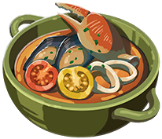

Mighty Tomato and Seafood Soup
This soup, which should definitely have been called a stew (based on the tomato-based, Italian stew, cioppino), packs a powerful punch while potently packing you with the power to potentially punch powerfully.
Eat, and punch, responsibly. Make sure everyone has the proper equipment and that they have read the safety manual.

What You Will Need
- One quart fish stock
- 6 cloves garlic, minced
- 2 onions, chopped
- 2 carrots, shredded
- One metric ton of canned, fire-roasted tomatoes (approx 28 oz)
- Basically every single kind of Italian herb, ever, dried (parsley, bayleaf, red pepper flakes, oregano, thyme, NO ROSEMARY unless you feel like it. And sugar and salt to taste - you know, all the commonly known spices.)
- 4 tablespoons tomato paste
- One bottle of white wine, divided (half for you to drink right now, I'll wait - and half for going in the stew)
- Threeish pounds of fish. The best fish. Your favorite fish. And if you truly want this dish to grant you that coveted, mighty attack+++ boost, you're gonna need to fill this stew with muscles. I mean mussels. Bullfish, swordfish, and sawfish are all also appropriately strong choices. Herrings are famously misleading so I wouldn't trust them if they tell you they lift.
Directions
- Draw a circle.
- Draw the rest of the owl.
- Admire your owl, and save it for later.
- In a large pot or dutch oven, saute the onions and carrots for four to five minutes over medium-high heat (optionally, over two tablespoons of olive oil). Season with salt.
- Add garlic and cook for one minute. Then add the tomato paste and cook for another minute.
- Add half a bottle of white wine and bring to a boil. Make sure to fully incorporate any brown bits that has formed on the bottom of the pot from the veggies and tomato paste - this will add great depth of flavor to your broth. Then reduce to a simmer for two minutes.
- Add the tomatoes, fish stock, and herbs. Simmer for about 25 minutes to let those flavors meld (and for the canned tomato flavor to mellow out.)
- Add your mussels - cook for three to four minutes.
- Add your other fish - cook for five or so minutes, until opaque/finished cooking.
- Remove your soup from the heat, serve with crusty bread, and ask your owl what the macros of this meal are. Your owl will be able to provide you with the wisdom to become mighty in mind and spirit, in keeping with your now incredibly OP body.
*Don't put salsa in you cioppino, you weirdos, unless you are deliberately going for a different flavor profile and you want to be that guy on those recipe sites saying, "Mmm the recipe was so good and also I didn't follow the recipe at all."
Back to the menu.
**Full disclosure, I have not actually made this recipe. This recipe has been made up and might taste like a drunk mistake. So, like, I don't know, maybe put some salsa in it?